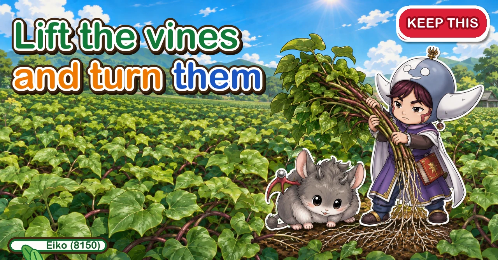
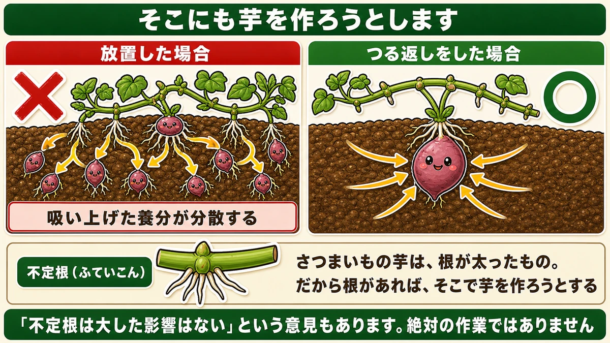
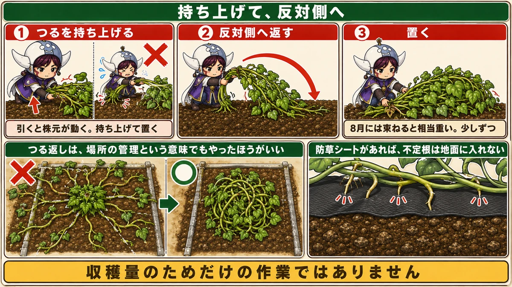
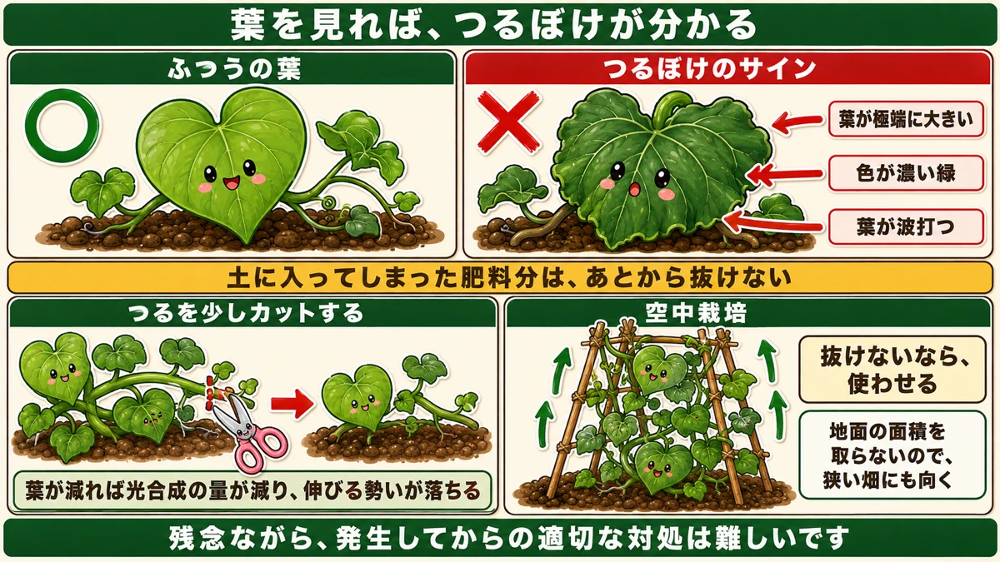
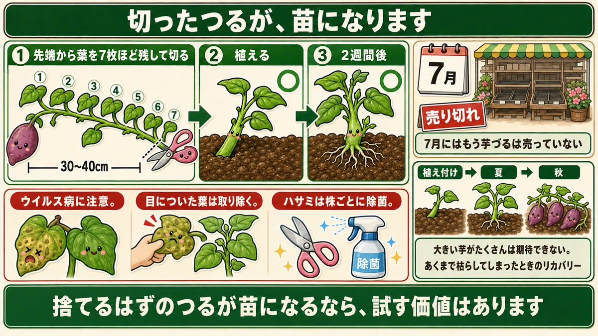

Roots from the vine joints mean tubers there too 🍠 So you turn them over

🍠 "Masses of leaf and no tubers."
🍠 "The vines have reached the next plot."
🍠 "Do I actually have to turn the vines?"
Hello, I'm Eiko. Eight years of growing vegetables organically and without pesticides, and a teaching licence in science.
In high summer, sweet potato vines take off all at once. Whether you do this job decides the size of the tubers in autumn.
The point, up front:
Sweet potato vines put roots down along their length.
And where those roots go into the ground, the plant tries to make tubers ☺️
Adventitious roots

What this diagram says （図解の文字）
- It tries to make tubers there too
- × left alone — the nutrients taken up are divided
- ○ vines turned ／ adventitious root
- A sweet potato is a thickened root. So wherever there is a root, it tries to make one
- Some say the adventitious roots make little difference
Lift a sweet potato vine and you'll see fine roots coming out of the joints. These are adventitious roots — roots from somewhere other than the usual place.
And that's the problem
When an adventitious root gets into the soil, the plant starts making tubers there.
A sweet potato is a thickened root — so wherever there is a root, there can be a tuber.
The result: the nutrients being taken up get divided among many places, and the tubers at the crown, where you wanted them, are correspondingly smaller.
So you turn them over
Lift the vine and flip it. Off the ground, the adventitious roots can't get anywhere. That's the whole job.
There's a second reason
A home garden has a problem that has nothing to do with yield.
The vines run outward in every direction from the plant — two or three metres without difficulty, and they don't stop.
They cross into the next plot
On an allotment or a rented plot, this becomes somebody else's problem. Even in your own garden they block paths and lie over other crops.
So turning the vines is also plot management. It isn't only about the harvest — it's about not being a nuisance.
How

What this diagram says （図解の文字）
- Lift, and turn to the other side
- 1 lift the vine × pulling moves the crown. Lift and set down
- 2 fold it to the other side ／ 3 set it down
- By late summer a bundle is genuinely heavy. A bit at a time
- × ○ with ground-cover fabric, the adventitious roots can't reach the soil
The job itself is almost disappointingly simple: lift the vine that's running one way and fold it back the other way.
Two cautions
They get heavy. Early on the vines are light; later in the season a gathered bundle is substantial. Do a bit at a time and mind your back.
And don't pull. Lift, then set down. Pulling doesn't snap the adventitious roots — it moves the crown of the plant.
Ground-cover fabric helps
If the bed has ground-cover fabric on it, the adventitious roots are blocked and can't reach soil.
The vines still run everywhere, though, so do it for plot management anyway.
The leaves tell you if it's running to vine

What this diagram says （図解の文字）
- The leaves tell you it's running to vine
- ○ a normal leaf ／ × the signs: a leaf that's unusually large ／ a very dark green ／ wavy leaf margins
- Fertiliser that's already in the soil can't be taken back out
- Cut some of the vine back — fewer leaves means less photosynthesis and less drive to extend
- Vertical growing — if you can't remove it, make the plant spend it
The commonest sweet potato failure is all vine and no tuber: magnificent foliage, and small tubers when you dig. The cause is overfeeding — the same as with peas.
Three signs in the leaves
Turning the vines is a good moment to inspect them.
- Is one leaf unusually large? Clearly bigger than the rest is a warning
- Is the colour very dark green? With tomatoes, dark green means well fed. With sweet potatoes, too dark means overfed
- Are the leaf margins wavy? Undulating edges also point at excess feed
Honestly, it's hard to fix once it shows
Fertiliser already in the soil can't be taken back out. Same inevitability as everywhere else: what went in doesn't come back.
What you can do is make it spend it
Cut some of the vine back and reduce the number of leaves.
Fewer leaves means less photosynthesis, less sugar made, and less drive to extend. You're taking the momentum out of it.
Growing it upward
There's a more interesting option: build a frame and train the vines up it.
Why it helps
Moving material upward costs the plant energy — and making it spend that energy burns off the surplus fertiliser.
If you can't take it out of the soil, make the plant use it.
And it saves space
Grown upward, it doesn't take up ground area. For a small plot or a container, that alone makes it worth trying — the same thinking as running cucumbers up netting.
Watch for virus as well
While you're turning the vines, look for small spots on the leaves. Sweet potatoes have a real problem with viral disease.
- Remove any leaf you notice
- Sometimes the whole plant has to come out before it gets worse
A virus can't be cured — removal before it spreads is the only move. And disinfect the blade between plants; as with potatoes, people are the vector.
The leaves are the gauge
Both overfeeding and virus show in the leaves. A sweet potato grows underground, so there's nothing else to look at.
The leaves are all you can see. Turning the vines is also the chance to read them.
The cut vines make new plants

What this diagram says （図解の文字）
- A cut vine becomes a plant
- 1 cut leaving about seven leaves from the tip — 30–40 cm
- 2 plant it ／ 3 two weeks later ○
- By midsummer the slips are sold out
- Watch for virus. Remove any leaf you notice. Disinfect the blade between plants
By midsummer, sweet potato slips are no longer on sale. If the plants you put in have died, you'd normally write the year off.
The vines you cut while turning can be used instead:
- Cut leaving about seven leaves from the tip
- 30–40 cm (12–16 in) long
- Plant it
Two weeks and it's rooted, with new growth coming. Sweet potato vines are that vigorous — unsurprising, given that the slips you buy are themselves cut vine.
To sum up
- ✅ Vines put adventitious roots down from the joints
- ✅ Where those roots enter the soil, the plant makes tubers
- ✅ Which divides the nutrients and shrinks the tubers at the crown
- ✅ The fix is lifting and turning the vines
- ✅ Opinions differ on how much it matters — but it's a small job, so do it
- ✅ Vines run 2–3 m in every direction and cross into other plots
- ✅ So it's plot management as well as yield
- ✅ Lift and set down; don't pull, or you move the crown
- ✅ Ground-cover fabric blocks the adventitious roots
- ✅ Three overfeeding signs: oversized leaves, very dark green, wavy margins
- ✅ Fertiliser in the soil can't be removed — make the plant spend it
- ✅ Cut some vine back, or grow it upward on a frame
- ✅ Watch for virus spots; remove leaves and disinfect blades
- ✅ The leaves are the only gauge you have
- ✅ A cut vine with seven leaves roots in two weeks
You don't have to do all of it. Go out once and lift the vines off the ground and fold them back. One pass is most of the benefit 🍠
Thank you for reading!